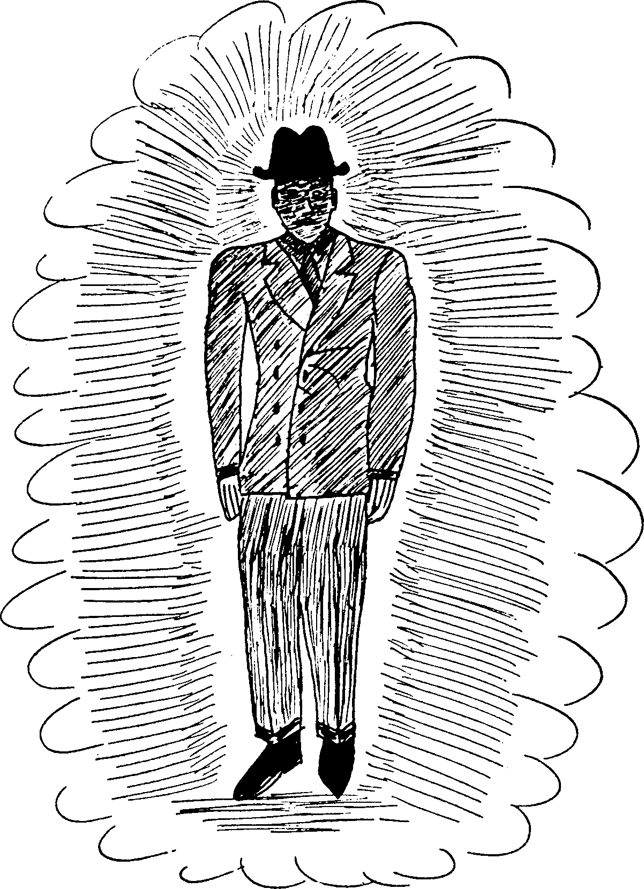

Pendant la 2de guerre mondiale, Bender sert dans l'Armée de l'Air. Après la
démobilisation, il part de West Pittston (Pennsylvanie) pour BridgePort, où il gagne ses galons de cadre en tant que superviseur dans l'usine d'Acme Shear
Barker, Gray Roscoe: 1956.
IFSB
, Bender annonce dans le courrier des lecteurs de Other Worlds notamment la
création de l'IFSB, une petite organisation ufologique basée à Bridgeport (Connecticut). Il publie le 1er numéro de Space Review, une revue
dédiée à la diffusion de nouvelles sur les ovnis, dans lequel il écrit le mystère des soucoupes volantes sera
finalement résolu par des personnes calmes à l'esprit lucide
L'association développe des antennes dans 48 états, recrutant des gens comme August C. Roberts, Dominick C. Lucchesi, ou Gray Barker, son
correspondant en Virginie-Occidentale. Mais Space Review circule parmi des centaines de lecteurs plutôt que
des milliers.
Révélation
, alors qu'il réfléchit à une hypothèse d'explication des soucoupes volantes, il a une
illumination : il est convaincu d'avoir trouvé la réponse, et en fait part immédiatement à Barker dans une lettre
le : n'accepte plus aucun nouveau membre jusqu'à ce que le n° d'octobre de Space
Review soit entre tes mains. Il raconte aussi à Roberts que 3 hommes lui ont rendu visite, et ont eu pour
effet de le plonger dans un mutisme total concernant tout ce qui touche aux enquêtes sur les soucoupes ! De
fait, , lorsque Bender est interrogé par ses amis Roberts et
Lucchesi, sa réponse est très souvent : Je ne peux pas répondre à ça.
, 18 mois après la création de l'IFSB, ce qui sera
le dernier numéro de Space Review fait 2 annonces majeures. La 1ʳᵉ, intitulée Dernier Bulletin
commence comme ceci :
Une source que l'IFSB considère comme très sûre nous a informé que
l'investigation sur le mystère des soucoupes volantes approche des étapes finales. La même source dont nous
avons des données référencées, qui sont parvenues en notre possession, suggère que publier ces données dans Space
Review n'est pas approprié en termes de méthode comme de moment.
Il indique :
Je suis allé au fond du fantastique et j'ai trouvé la réponse.
Pour lui, cette découverte aurait pu bouleverser l'humanité. Son intention serait de publier ses découvertes dans
son magazine Space Review mais :
Déclaration d'Importance : Le mystère des soucoupes volantes n'est désormais plus un mystère. La source est
déjà connue, mais toute information à ce propos est retenue par ordre d'une source supérieure. Nous
souhaiterions imprimer la totalité de l'histoire dans Space Review, mais en raison de la nature de l'information
nous sommes réellement désolés d'avoir êté conseillés de ne pas le faire Barker, G.: They knew Too
Much About Flying Saucers, pp. 109-110, 114, 138.
La déclaration se termine par :
Nous conseillons ceux engagés dans un travail sur les soucoupes d'être s'il vous plait très prudents.
Ce qui attirera l'attention sera le fait qu'après cet article, Bender suspend tout autre publication du magazine
et ferme l'IFSB sans autre explication. Ses amis et associés le voient
particulièrement effrayé et perdre l'appetit pendant quelques jours.
MIB

Dessin de Bender représentant sa vision d'un MIB
Plus tard, dans une interview à un journal local, Bender révèle qu'il a gardé son "secret" à suite de la visite
de 3 hommes. Un soir alors qu'il est allongé dans sa chambre, à somnoler et réfléchir, il remarque 3 visages dans
la pièce. Ceux-ci deviennent peu à peu plus clairs et les détails de leur vêtements se précisent. Ils sont vêtus
de noir, comme des prêtres. Une seule différence : ils portent des chapeaux d'un genre démodé, qui masquaient en
partie les traits de leur visage. Ce qu'on appelle typiquement des MIB.
Bender raconte :
Bender montrant un dessin de MIB
Les yeux des 3 hommes se mirent soudain à s'illuminer Comme des ampoules électriques et les 3 visages firent
de même. Alors, ils convergèrent tous vers moi. La douleur au-dessus de mes yeux devint presque insupportable.
Ils semblaient brûler de l'intérieur. Ce fut à ce moment que je sentis qu'ils m'adressaient un message par voie
télépathique.
Bender
Les étranges visiteurs confirment alors à Bender que ses spéculations sur la véritable nature des ovnis sont
parfaitement justes. Ils lui fournissent même des détails supplémentaires. Mais ils lui demandent de faire cesser
la publication de son journal, dissoudre son association, et ne révéler la vérité à personne. Ils lui demandent de
jurer sur son honneur de citoyen des États-Unis.
L'amateur d'ovnis en est si terrifié qu'il n'aura de repos avant d'avoir satisfait leur demande. Certains
déclareront que l'histoire de cette visite et d'un "avertissement" n'étaient qu'une façade pour une publication
qui perdait de l'argent.
Livre
Le semi-mystérieux "Dr. d' et Bender (à droite) lors d'une soirée à l'appartement de James Moseley, vers 1964
, Bender semble prêt à faire plus de révélations sur son histoire dans un livre Bender, A. K. : Flying Saucers and the Three Men in Black qui se limite aux
faits,
mais décrit étonnamment un vaisseau extraterrestre ayant des bases en Antarctique, géré par des êtres mâles,
femelles et bisexués, le tout vu en projection astrale. Les êtres lui auraient dit venir d'un autre système
stellaire, avoir adopté des corps humains pour cacher leur nature monstrueuse, et être ici pour extraire un composé
chimique de l'eau de mer. Une fois leur mission terminée, Bender serait libre de raconter l'histoire, comme il le
fit Bender, A. K.: Flying Saucers, pp. 74 &c. Bender fournit également
des
images de soucoupes qu'il connait. On voit le dessin d'un ovni de type avec les 3 boules en-dessous, réminiscence du
Haunebu II, à côté d'un objet en forme de cigare, similaire à celles qu'aura diffusé
George Adamski.
Par la suite Bender vit dans la région de Los Angeles, mais refusant désormais d'aborder
le sujet des soucoupes volantes.